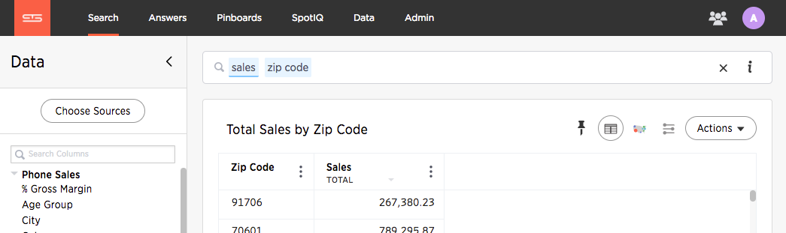
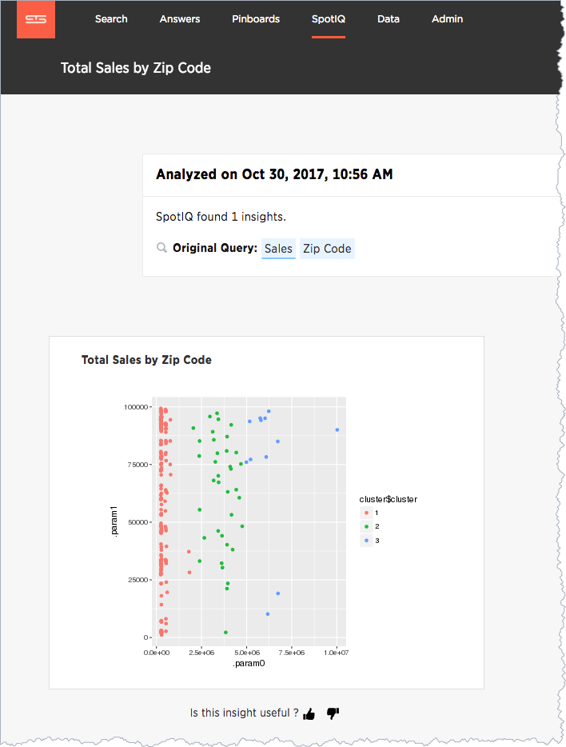

Advanced R Customizations
Admins and users with the Has SpotIQ privilege can run an R script.
The R language is an open source programming language used for statistical computing. As such, knowledgable users can use R to perform sophisticated analysis in a ThoughtSpot environment.
This section explains the feature and how to use it. It is not meant as an R primer. To learn more about R and how to use it, visit the R Project for Statistical Computing.
Understand R script requirements in ThoughtSpot
ThoughtSpot provides R running as a service within a ThoughtSpot cluster. Permissions are restricted. This means the R script does not have permission to issue system commands.
The ThoughtSpot cluster has pre-installed the basic R packages. If your script requires a specific package, you must request your ThoughtSpot cluster admin to install the package on your behalf.
ThoughtSpot internally transforms and binds an R script prior to sending it to the cluster’s R service. The system expects each script have a well-defined structure which is the following:
####R SCRIPT#### <Fill script body> ####COLUMN BINDINGS (ONE PER LINE)#### <Fill column bindings here>
The scripts contains the column bindings with the answer results appearing as parameters in the R script. ThoughtSpot expects for each `.param`n in R your script must provide a corresponding binding. The following pseudo code illustrates an R script in a form suitable for ThoughtSpot:
####R SCRIPT#### df <- data.frame(.param0,.param1, ...); ... write.csv(..., file=#output_file#, ...);
Notice that .param0 refers to first column in column binding and .param1 refers to the second.
Should you need a third binding, you would use .param2 and so forth.
The output of the script is either PNG or CSV.
This example script uses output_csv to emit data in a CSV (tabular) format.
Use output_png to emit data in PNG format.
Presently, error reporting is limited for R scripts in SpotIQ. You should validate your R script independent of your ThoughtSpot environment. After you are sure they are free of syntax or other errors, then try the script in ThoughtSpot.
Try a Custom Analysis with R
The following illustrates how to run an R analysis on data that has a sales column and a zip code column.
-
Sign into ThoughtSpot and go to the Search bar.
-
Use Choose Sources to locate a source with sales and zip code data. This example uses Sporting Goods Retail Worksheet data.
-
Enter
sales store zip codein the search bar.If your source contains the proper data, you should see something similar to the following:
 -
Click the View R analysis icon
 .
. -
Enter this sample script in the field.
####R SCRIPT#### library(ggplot2) set.seed(20) df <- data.frame(.param0, .param1) cluster <- kmeans(df[1:2], 3, nstart = 20) cluster$cluster <- as.factor(cluster$cluster) png(file=#output_file#,width=400,height=350,res=72) print(ggplot(df, aes(.param0, .param1, color = cluster$cluster)) + geom_point())
This script binds
.param0toSalesand.param1to theStore Zip Codecolumn.You can see from the script that the output should be PNG (
output_png). -
For Select column(s) for R analysis, make sure that both Sales and Store Zip Code columns are selected.
-
For Output Filetype, make sure PNG is selected as the output format.
-
Click Run Analysis.
SpotIQ runs your analysis in the background.
-
When the analysis is completed, you should see the results in PNG format similar to the following:

You can run another R script directly on this result to get CSV results. Try this on your own. Here is the script to give you CSV output:
###R SCRIPT#### set.seed(20); df <- data.frame(.param0,.param1); cluster <- kmeans(df[1:2], 3, nstart = 20); df$Cluster <- as.factor(cluster$cluster); colnames(df)[1] <- 'Sales'; colnames(df)[2] <- 'Zip Code'; write.csv(df, file=#output_file#, row.names=FALSE);